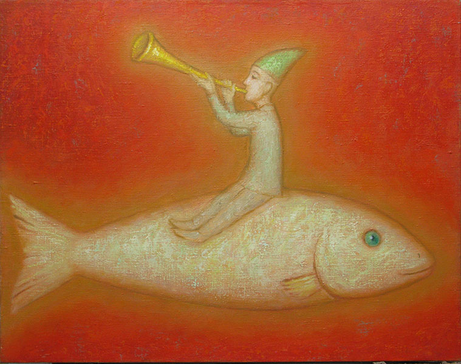

Открытие выставки ПроСвет 1 февраля 2011 года
Войдя в зал, вы попадаете в иной мир,
Вы забываете свои заботы и печали, тревоги и страхи.
В этом мире все люди — братья, все похожи лицом друг на друга
и на самого Художника, который их выдумал.
Они смотрят на Вас голубыми глазами любовно и доверчиво;
У них нет проблем. Они ласкают друг друга,
ведут безмолвные беседы с жирафами и лошадьми,
играют на дудках и колоколах.
Среди людей живут ангелы, они летают над городом, звонят и трубят,
возвещая славу Отцу Света.
Ещё не всматриваясь во все удивительные подробности сюжетов картин,
вы ощущаете благотворное действие колорита: он согревает и успокаивает душу, как первые лучи солнца ясным утром на берегу моря.
И ещё — возвышает, как малиновый колокольный благовест.
…Только не смотрите из зала в окно на улицу: реальный мир с домами-коробками, людьми в черных куртках и автомобилями покажется вам мрачной антиутопией, выдумкой писателя-фантаста, или тяжелым сном.
Свет и Человек
Рассматривая картины Григория Иванова, поражаешься фантазии Художника, создавшего столько необычных сказочных сюжетов с неожиданной трактовкой форм и отношений, с неканоническими сочетаниями красок.
Однако всё это разнообразие не утомляет, так как составляет в совокупности единую систему двух основополагающих начал.
Эти начала — Свет и Человек.
Все сюжеты и композиции обширной коллекции работ Григория Иванова, все живописные и композиционные средства и приёмы призваны выражать и варьировать идею связи Света и всего сущего в этом живописном мире.
А также — связи Человека, Ангела, животных и предметов.
Естественно, Человек и Свет так же неразделимы, как Материя и Дух, как Ян и Инь.
Свет — это нечто неопределимое в терминах положительной науки и не объясненное философией. Разве это не парадокс: свет невозможно увидеть, он «внутри себя», или «сам по себе» абсолютно черный.
Но, к счастью, человеческая интуиция и орган зрения умеют отличать свет от тьмы и даже определять качество света (светового потока) по той реакции, которую он вызывает в нашем органе зрения. Мы не видели и не увидим света, но прекрасно видим цвет: это ощущение, возникающее в органе зрения при воздействии на него света.
Очередное чудо: как люди глубокой древности почувствовали ценность света и ощутили связь его со всем сущим на Земле?
- Един огонь, многоразлично возжигаемый,
- Едино Солнце, всепроникающее,
- Едина заря, всё освещающая,
- И едино всё, что стало всем [этим].
- Ригведа, VIII, 58(2)
- Едино Солнце, всепроникающее,
- Далее, то сияние, что светится над этим небом,
- Над всеми и надо всем в этом высшем из миров,
- Это поистине то же сияние, что и внутри человека.
- Чхандогья-упанишада, III,13 (7)
- Над всеми и надо всем в этом высшем из миров,
Народы Древнего мира называли главный источник света разными именами:
Митра, Варуна, Агни, Сурья, Амон-Ра, Атон, Гелиос, Феб, Шамаш, Ярило…
В Библии солнце не персонифицируется и не имеет собственного имени. Это — одно из созданий бога Яхве (Иеговы). Впрочем, мы не знаем его настоящего имени. Оно скрыто, подобно имени Ра и подобно истинному виду Света.
Эта досадная для человека неясность несколько прояснилась, когда на землю был послан Сын Божий, открыто провозгласив:
- Я свет миру (Ин.8:12), а св. Иоанн подтвердил:
- Он был Свет Истинный (Ин:1:9).
С тех пор мы знаем: Свет — это Бог.
Свет и цвет в произведениях Григория Иванова пробуждают в душе зрителя ощущение духовного Начала, и вместе с ним — чувства и мысли, далекие от житейской суеты. За это будем благодарны Художнику.
CВЕТИЧЕСКИЕ АБСТРАКЦИИ
- …но свет
- должен быть
- собственного изготовления.
- Поэтому я делаю витражи.
- Андрей Вознесенский
- должен быть
На выставке 1 февраля 2011 года мы впервые увидели новый для Художника мотив, названный им «светические абстракции».
На пути к самому выразительному образу света Григорий Иванов приходит к полной дематериализации источников света и исчезновению предметов.
Самые впечатляющие полотна на выставке — большие светящиеся квадраты — голубой, розовый, зеленый, золотистый, перламутровый, синий…Перед ними можно долго стоять, ни о чем не думая, а только переживая глубину голубого, мягкость розового, свежесть зеленого, драгоценность золотого, таинственность синего, переливчатость перламутрового. Художник рассматривает и переживает свет в его цветных ипостасях. Он не спорит с природой, запретившей человеку видеть свет — ведь и отдельные цвет? объединяются в феномен света подобно тому, как все поучения Сына, пришедшего в мир, слагаются в единый свет Истины.
Голубой свет
Зеленый свет
Источник света
Перламутровый свет
Синий источник
«Светические абстракции» Григория Иванова могут напомнить зрителю о полотнах Марка Ротко — и вызвать подозрение в подражательности этих работ. На самом деле концепции Ротко и Иванова существенно различны, так же, как колорит, формат, композиция и техника наложения красок.
1. В картинах Ротко обычно два-три цветных пятна, положенных на гладкий фон.
У Иванова — одно мерцающее пятно, плавно изменяющее цвет к границам картины, как будто сквозь прозрачную белую (серую, и др.) пластину пропустили поток монохромного спектрального цвета.
2. У Ротко мерцание цвета происходит спонтанно, вследствие просвечивания тонких слоёв краски.
У Иванова эффект мерцания создается специально при помощи неровного наложения красок кистью (вибрация).
3. У Ротко цвет выражает настроение и состояние души художника, поэтому возможны не только яркие краски, но и черные, серые, коричневые, то есть лишенные света, погасшие.
«В них отразился самый сокровенный мир личности Ротко — подавленный, депрессивный, разочарованный, полный меланхолии и одиночества» (Якоб Бааль-Тешува. Ротко.— М. 2006)
У Иванова все светические полотна сияют и источают свет — даже синие.В них отсутствует индивидуально-психологическое начало. Это вообще "Свет Истины", не замутненный трагизмом человеческого бытия.
4. У Ротко формат большинства работ — вертикальный, характерный для портретной живописи. Художник портретирует сам себя средствами цвета и композиции.
У Иванова форматы близки к квадрату; они характерны для картины-знака, картины-символа, к тому же они отличаются явной декоративностью.
Светические картины Григория Иванова противостоят концепции «Смерти искусства», заявленной в «Черном квадрате» Малевича, и в этом их благородная миссия.
Свет Григория Иванова бóльшей частью неяркий. Он теплится в окошках дальней деревеньки, выводящих одинокого путника на верную дорогу; он даёт надежду на теплое пристанище, отдых и пищу. Свет излучают кроткие голубые глаза одинокого путника, шагающего своим заповедным путем по грешной земле.
Ведь свет — это движение. Несущий его должен двигаться. Христос, апостолы, Будда, Магомет — все много ходили, сеяли свой свет.
Кроткий путник Григория Иванова всегда в пути, и лишь изредка делает остановку, чтобы подарить розу принцессе в башне.
Путники света
Прогулка с месяцем
По лунному пути
Прогулка с луной
На пути света
ЛУНА И ЛОДКА
Луна — второе по значению светило после Солнца, воспетое многими поэтами и жрецами. В разных странах богиням Луны посвящались проникновенные строки. Грешно было бы не вспомнить здесь хоть немногие из них. Египетская Исида так говорит о себе:
- Я — звезда, что восстает из моря, сумеречного моря,
- Я приношу людям сны, что правят их судьбой,
- Я вздымаю лунные силы в душах людей,
- Приливы, отливы и снова приливы.
- Я — вечная Женщина, Я — Она,
- Приливы и отливы человеческих душ принадлежат мне.
- Из моих рук человек принимает свою судьбу,
- Прикосновение моих рук дарит покой —
- Это лунные силы, мои владения.
- Исида на земле и на небе, Персефона,
- Лунная Диана и Геката,
- Исида под вуалью, морская Афродита —
- Всё это я, и они во мне…
- (Ди Трачи Регула. Мистерии Исиды. — М. 2000)
- Я приношу людям сны, что правят их судьбой,
У Григория Иванова луна — не изменчивая Селена,
не коварная Гера, не жестокая Иштар, не властная Исида.
Она не достигает шарообразной формы: она всегда чашевидная,
голубоглазая, улыбчивая. Её везет на спине лошадь, катает на тележке красавица, носят в руках блаженные странники в колпаках.
Пусть они кажутся нам немного смешными — но ведь достали Луну с неба! А нам это не светит…
Лошадь с луной
Девушка с луной
Общество луны приятно также и ангелам: ведь их крылья весьма похожи на половину лунного серпа, а к луне можно подвесить колокольчик, чтобы свет сочетался со звуком.
Ангел с луной
И уж совсем сказочная ситуация — серп луны, приспособленный для перевозки грузов (тележка на колесах, «По лунному пути»).
Луна — путеводное светило для странника в зеленом платье и розовом колпаке, с колоколом на палке. Она огромная и синяя.

Несущий звон
Может быть, в душе путника звучит старинный орфический гимн Селене:
- Как ты прекрасна, высокая духом, янтарная, в ясном
- Звезд окруженье, всезрящая, сну не подвластная дева!
- Ярких лучей изливаешь потоки; и всякую участь,
- Радость несущую, благословляешь сиянием кротким…
- Звезд окруженье, всезрящая, сну не подвластная дева!
Впрочем, луна может превращаться в лодку, а лодка в луну. Ведь их древние символические значения тождественны. И та, и другая плывут — по воде или по небу, обе несут свет или то, что его заменяет — звук духового инструмента.

Трубач
Если в картине изображено плавание в лодке с перевозчиком и женщиной (ню) — знайте: это может быть магический обряд вызывания дождя (как в Индии), или метафора брачного союза. Судя по печальному выражению лица перевозчика, возможна и такая трактовка сюжета: путешествие души в загробный мир. Ведь лодка, согласно древним мифам, перевозила умерших в Тартар и была принадлежностью божества преисподней.
Само солнце днём плывет по небу в солнечной ладье, а ночью в другой лодке по подземной реке.
Лодка любви
Эти размышления вызваны оригинальным в наши времена сюжетом.
Поверим названию картины: здесь речь идет о любви.
В сказках Григория Иванова и луна, и лодка — персонажи светоносные, чуждые тайне и мраку бытия. И лишь в некоторых библейских сюжетах видим состояние грусти или тоски. В таких картинах свет гаснет (см. главу «Цвет, колорит»).
АНГЕЛ
На картинах Григория Иванова ангел — это человек с крыльями (а человек — ангел без крыльев).
Небесный посланец активно участвует в жизни Земли:
он летает над городом, благословляет жилища человека,
возвещает весеннее пробуждение природы — сыплет цветы из рога изобилия
поёт гимны Творцу, звонит в колокола,
играет на флейте.
И все эти деяния — воплощения света, инобытие света в звуках,
светящихся красках одежды и крыльев,
в сиянии голубых глаз.
Потому что главное дело ангелов — нести свет истины на Землю.
Иногда ангел несет огромную светящуюся жемчужину или золотое яйцо — сгусток света, символ Воскрешения Христа — Света человеков.
Ангел над городом
Ангел-хранитель
Ангел с жемчужиной
Ангел света
Ангел с золотым яйцом
Сказочный человек у Григория Иванова мало чем отличается от ангела: он может взлетать в небо даже без крыльев, единой силой духа.
Ангел над домом
Взлетающий ангел
Сюжеты Григория Иванова нередко перекликаются с поэзией Н. Заболоцкого. В картине (Музыка души 40х55, 2007) звуки ангельской дудки превращаются в цветущий куст.
Музыка души
- Но я, однообразный человек,
- Взял в рот длинную сияющую дудку,
- Дул, и подчиняясь дыханию,
- Слова вылетали в мир, становясь предметами.
- Взял в рот длинную сияющую дудку,
Кажется порой, что Бог как будто бы отвернулся от нашего мира, разочарованный нашей суетностью и греховностью: слишком много зла и всякого неустройства. Тем большее упование возлагаем мы на ангелов, служителей Всевышнего. Современный человек, в общем неверующий, готов признать реальным попечение ангела-хранителя, так как оно чувствуется в повседневной жизни.
Михаил Эпштейн пишет, что в США укоренилась новая религия — «ангеломания». Люди всерьёз надеются на помощь ангелов во всех делах, так что отпадает необходимость обращаться к самому Всесильному (М.Эпштейн. Из Америки). В России всем известен феномен Венедикта Ерофеева («Венички»); он часто общался с ангелами, особенно в нетрезвом состоянии.
Правда, ангелы не соприкасаются телесно с людьми или животными — ни в картинах Григория Иванова, ни в жизни нашей.
КОЛОКОЛ
Колокол — это чаша, из которой льется звук,
подобно тому, как льётся свет из чаши небосвода,
из лунного ковша, из глаз человека.
Колокольный звон — совсем особая музыка:
она владеет таинственной силой воздействия
на человеческую душу.
Мощные волны звука в строгом ритме
совпадают с ударами сердца, проникают глубоко в естество,
исторгают очистительные слёзы.
Человек, умеющий чувствовать, не может слышать без слёз
колокольный благовест.
На картинах Григория Иванова колокол — большой или малый —
почетный участник жизни людей, ангелов и животных («Несущий звон»).
Человек в светоносной одежде спешит навстречу Луне,
и колокол за его спиной подпевает звуку его шагов.
Тяжелая ноша не давит плечо: на лице человека блаженная улыбка —
он плывет по волнам света и звука.
Добрая весть
Ради доброй вести не трудно пройти семь верст босиком по снегу,
не трудно нести на плече три колокола:
они излучают свет в безлунную ночь —
их красные и зеленые лучи слагаются в белый свет.
Человеку в розовой треуголке не холодно:
ведь он в оранжевом плаще…
Звон
Огромный медный колокол
Раскаленный докрасна
Звенит малиновым звоном
Человек тонет в волнах звука,
и звон превращается в свет его души.
Под сенью колокола
Эта картина — целиком светическая.
И колокол, и человек — только бесплотные силуэты.
Главное здесь — экстатический цвет, восторг наполненности
светом и жаром Веры.
Следовало бы назвать картину «Царь-колокол»
Борьба со змием
И люди, и ангелы, и даже коровы и быки
часто носят при себе маленькие колокольчики —
талисманы, охраняющие их в пути.
В момент опасной борьбы со змеем герой (красный человек)
звенит колокольчиком.
Это придаёт ему силы, и он побеждает.

Мой путь
Художник отправляется в путь, соблюдая завет Иисуса Христа:
- Не берите с собою ни сумы на дорогу,
- Ни двух одежд, ни обуви, ни посоха.
- Ибо трудящийся достоин пропитания. (Мф. 10:10)
- Ни двух одежд, ни обуви, ни посоха.
Человек берет только самое необходимое —
большой медный колокол. С ним он всегда будет под защитой небесных сил,
и свет будет ему во тьме светить.
И нет у него в пути товарища, кроме белой ослицы,
которая может в минуту сомнения подсказать верный путь.
РЫБА
Рыба — почетный персонаж в библейских сказаниях. Уже в Ветхом Завете рыба послужила прообразом трехдневной могилы Христа, его временной смерти и Воскресения. Пребывание во чреве большой рыбы — это символ страданий души и погружения её во тьму, за которыми следует выход на свет и освящение.
Согласно древним верованиям, на трех рыбах покоилась земля. Однако, закон Моисея запрещает изображение рыб и всех прочих живых существ.
Новый Завет освободил Рыбу от запрета и предоставил ей почетное место в христианских мистериях. Рыба стала символом воды — второго материнского лона христианина, получавшего водное крещение.
Вспомним также, что Иисус кормил рыбами своих учеников и последователей. Рыба принесла Ему во рту монету для уплаты подати.
Рыбы и небесные светила занимают почетные места в ряду многочисленных символических фигур на картинах Григория Иванова.
Не случайно, по-видимому, огромная рыба красуется на первой странице буклета к выставке 1 февраля 2011 г. — ПроСвет.

Радость
Человек верхом на рыбе трубит в длинную дудку.
Это мелодия радости, она наполняет всё пространство тепло-красным светом.
Сама рыба и одежда человека (лучше сказать: человечка)
мерцают серебряными блёстками, покрывающими эти бесплотные существа.
И если рыба нема по природе, то здесь она, безусловно, имеет слух.
Она слышит торжествующую мелодию соло на дудке,
отчего сильно округляется её голубой глаз
в немом изумлении.

Музыка детства
Это вариант на ту же тему, но здесь на рыбе сидит голый ребенок,
а цветá радости — красный с золотом, серебряный и розовый.
Кто станет возражать?
Музыка моря
Новая интерпретация того же сюжета: соната треугольников разных пропорций, в которые преобразуются звуки трубы, хвосты и носы рыб, светлые волны моря.
Фантазия Художника удаляется от натурных прототипов; мысль движется в сторону абстрактной живописи.
Ловец рыбы
Совершенно новый поворот сюжета «Человек и рыба»: клоун-фокусник демонстрирует зеленую рыбу восхищенным зрителям. Видимо, он только что добыл её из складок своего халата. Темное пятно в центре картины подсказывает мысль о темной магии подобных чудес, если только это не чудеса Отца и Сына.
Резкий контраст малинового с зеленым свидетельствует о поразительности фокуса для публики.
Л. Миронова,
17.03.2011